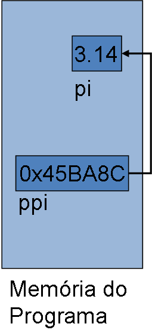
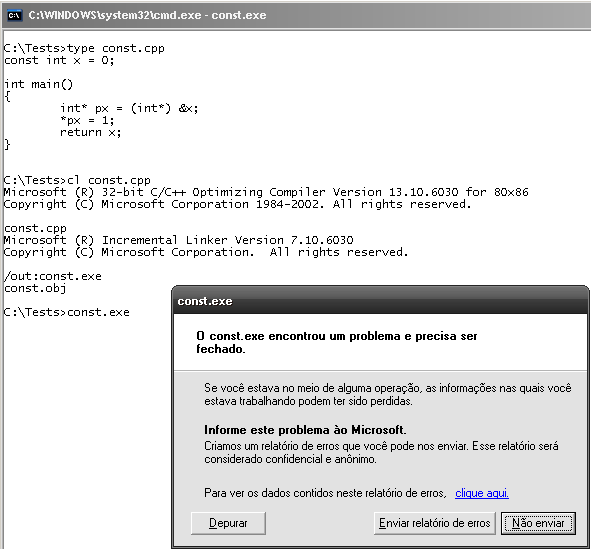
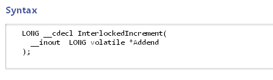

- O Pequeno Nicolau
- Const e Volatile
- O Golpista do Ano
- Almas à venda
- Ponyo: Uma Amizade que Veio do Mar
# O Pequeno Nicolau
Caloni, 2010-06-02 cinema movies [up] [copy]O Pequeno Nicolau é aquele típico exemplo de filme fofinho que funciona pela dedicação de sua direção de arte em reconstruir a época com um esmero tocante, por seu roteiro que entende a mente das crianças, e como sua criatividade às vezes (quase sempre) extrapola os limites da vida real de maneira encantadora, por sua direção que não mede esforços para situar o ponto de vista de tudo que acontece através dos olhos do pequeno Nicolau do título, um personagem famoso em livros franceses.
Acompanhamos diversas peripécias dos meninos na escola, que tentam encontrar uma forma de se livrar do futuro irmãozinho de Nicolau que, ele imagina, virá logo. Acompanhar esses eventos episódicos é quase como assistir à novela Carrossel (mas em grande estilo, francês) em formato longa-metragem. Mesmo assim, encanta que o filme também confie em nossa identificação quase apenas com o universo infantil, pois é dali que surgem as melhores gags.
No fundo é um filme que confia quase que cem por cento na identificação do público com uma infância lúdica da escola. Confia tanto que o mais impressionante de todo o filme é a direção de arte completamente voltada para o universo de Nicolau (e seu reduzido tamanho, como diz no título), assim como uma escolha de elenco feita a dedo e que provavelmente tomou mais tempo da produção do que as próprias filmagens.
# Const e Volatile
Caloni, 2010-06-04 computer [up] [copy]Padrão C (ISO/IEC 9899:1990)
6.5.3 type-qualifier
const
volatile
Padrão C++ (ISO/IEC 14882:1998)
cv-qualifier
const
volatile
Qualificadores de tipo
Chamamos de qualificador de tipo as palavrinhas mágicas **const** e **volatile**. Na prática elas definem como uma determinada variável será usada e se comportará durante a vida do programa.
Const
Uma variável const não pode ser alterada pelo programa durante sua execução, apenas durante sua inicialização:
const float pi = 3.14; // até onde sabemos, pi não irá mudar neste Universo
No exemplo acima, o valor de pi não pode mais ser alterado. Só que repare que ele foi, em determinado momento, alterado com um valor constante: na sua inicialização. Isso quer dizer que:
* pi é uma variável no programa representada por um local na memória **endereçável **pelo programa
* pi não é um define do pré-processador que irá virar uma constante literal (3.14, por exemplo)
// eu posso endereçar uma constante, // desde que qualifique corretamente meu ponteiro const float* ppi = & pi;

Teoricamente a região da memória que contiver uma variável const pode ser qualificada pelo sistema operacional como somente-leitura, mas isso não é uma obrigação. É obrigação do compilador avisar sobre tentativas de alteração da variável no meio do programa, mas nem sempre é possível enxergar que a memória não é alterável. Dessa forma, resultados imprevisíveis podem ocorrer.

Uso prático
Eu costumo usar variáveis const no lugar de defines. Além de ganhar na tipagem as constantes não precisam ser necessariamente globais, nem acessíveis por outros módulos. Um outro uso muito comum é criar variáveis locais que você sabe que não devem ser alteráveis por ninguém, como o tamanho de matrizes primitivas.
namespace Math
{
const float Pi = 3.14;
}
//...
int func1(int x)
{
float calc = x * Math::Pi;
return calc;
}
//...
int func2(int y)
{
const size_t PathSize = MAX_PATH * 2;
//...
char path[PathSize];
//...
}
Volatile
O significado do volatile teoricamente muda de implementação para implementação, mas na prática é uma forma de definir uma variável que está sendo acessada por outros programas/threads/entidades espíritas que podem alterar o seu valor sem seu programa notar quando.

O exemplo clássico da API Win32 é o InterlockedIncrement, que realiza operações atômicas em valores inteiros. Para fazer isso é necessário usar um recurso interno disponível pelo processador que irá modificar a memória sem intrusão de outras threads/processadores.

Uso prático
Variáveis volatile geralmente interagem de alguma forma com o sistema em que rodam, e são representadas por ponteiros para memória retornada por esse sistema ou documentada como sendo de uso específico.
Const e Volatile
É possível que exista uma variável que não pode ser modificada pelo seu programa, mas é modificada pelo sistema, de forma que ela é uma mutante!
/// endereça o relógio do sistema, atualizado a cada 1/100 milissegundos const volatile int* g_systemClock = (const volatile int*) 0x7689B9D4;

A definição de *g_systemClock é de uma memória que não pode ser alterada; só que ela é, pelo sistema. Então a variável também é volatile. No entanto, independente de ser const ou volatile, o tipo nunca será **alterado**, apenas **qualificado**. São duas coisas diferentes na linguagem.
# O Golpista do Ano
Caloni, 2010-06-04 cinema movies [up] [copy]Um filme com estilo episódico (fade out em vários momentos), narração em off de um protagonista que supostamente está morto (acho que já pensaram nisso antes...) e invencionices demasiadas com a câmera, muitas vezes na mão. Apesar de ter tudo para dar errado, O Golpista do Ano apresenta Jim Carrey, Ewan McGregor e até Rodrigo Santoro em personagens que acompanham as personas dos atores, mas desafiam a realidade dos eventos (sim, o filme é baseado em alguns fatos em torno da figura de Phillip Morris).
O fato é que com atuações convincentes e uma trama que nos leva ao ápice da malandragem, O Golpista do Ano se saiu muito melhor que o tão falado Trapaça. Ewan McGregor, por exemplo, domina a história e o personagem desde o início, estabelecendo de uma vez por todas a relação entre Phillips e Steven, vital para o filme (como demonstra o título original). Realizando cenas engraçadas e emocionantes ao mesmo tempo, o roteiro e direção da dupla John Requa e Glenn Ficarra consegue oscilar de maneira mais ou menos tranquila entre os dois lados da mesma moeda.
No entanto, embora use de uma direção de arte significativa em seus mínimos detalhes (exemplo: quando eles se separam definitivamente cada um em uma prisão, as cores de seus uniformes são diferentes), a caracterização excessiva de Jim Carrey -- principalmente em seu leito de morte -- acaba mais assustando que se ornando com o conjunto da obra. Afinal de contas, deveria ser uma comédia, certo?
Talvez eu esteja errado. A vida real desses três sujeitos é uma comédia, mas definitivamente eles possuíam poucos momentos para rir de si mesmos.
# Almas à venda
Caloni, 2010-06-09 cinema movies [up] [copy]Esse filme escrito e dirigido pela estreante Sophie Barthes tenta usar o conceito de alma mais ou menos como um órgão transplantado, mas muito mais flexível, já que é possível usar a alma de outras pessoas para potencializar áreas na vida em que se é um zero à esquerda. Aí é que entra Paul Giamatti que interpreta... Paul Giamatti! Ele está com problemas com uma nova peça e resolve trocar de alma por uma que seja compatível com o personagem que tenta interpretar.
Sendo filmado como um thriller cômico, o filme ganha ritmo apenas ao tentar explicar como funciona a extração e o transplante de almas, e nem isso consegue fazer com propriedade. Não deixa de ser contraditório saber que, ainda que não se saiba exatamente como o mecanismo de almas funciona, já existem comparações entre elas (tanto que a suposta alma de Al Pacino é extremamente valiosa). De qualquer forma isso pode ser visto como uma crítica a respeito de como damos valor a coisas que simplesmente não sabemos o valor (e o fato do filme nunca se preocupar em explicar o que é alma). Há uma referência óbvia também à privacidade que temos hoje em dia. No anúncio da extração de almas por telefone fala-se sobre a privacidade total, mas quando o ator vai à consulta fica em uma sala de espera com um monte de pessoas e é chamado pelo nome.
Outro aspecto interessante é que as almas possuem cores e formas diferentes, e é óbvia a piada das celebridades terem almas "maiores" fisicamente, enquanto a do protagonista é minúscula e possui um formato pouco lisonjeador. A forma como a alma é tratada implica em como tratamos coisas de hoje em dia de maneira completamente banal. Se antes, no senso geral, a alma é algo inviolável, sagrado, na conversa com o Dr. fica bem óbvio que passa a ser mais um simples órgão, ou o que o valha. (O ator exclama "até que ponto chegamos", no que o Dr. responde "é a tecnologia, seu avanço", como se esse fosse o único empecilho para a agora possível extração de almas).
Ao ver a técnica de extrair almas é inevitável a comparação com o apagar de memória em Brilho Eterno de uma Mente sem Lembranças, e é notável como pode-se comparar ambos os filmes, principalmente na superioridade do roteiro de Brilho Eterno, que não se deixa intimidar pela ideia original e poderosa. Infelizmente, Almas à Venda sucumbe à sua própria ideia de ser original e em seu segundo e terceiro atos parte para um thriller clichê. É triste ver um tema tão bom não ser expandido em suas potencialidades, se bastando em uma historinha besta que poderia muito bem estar em outro contexto (tráfico de qualquer outro órgão, por exemplo).
# Ponyo: Uma Amizade que Veio do Mar
Caloni, 2010-06-30 cinema movies [up] [copy]Até uma animação infantil e ingênua como Ponyo, de Hayao Miyazaki, consegue nos fazer pensar em vários temas ao mesmo tempo. Se em um primeiro plano é uma aventura ecológica, onde o desrespeito do homem pelo meio ambiente é colocado em xeque quando Ponyo, um pequeno peixe filho de um pai controlador e sua mãe-natureza, decide se tornar humano e acidentalmente inicia um novo ciclo de crescimento marítimo que pode acabar com a predominância dos homens, seja nos mares ou na Terra. Já em um segundo plano é um filme sobre aceitarmos o diferente. O respeito aqui faz rima com amor incondicional, onde pode-se até especular que esse amor ao diferente pode vir de qualquer lugar, até de minorias como homossexuais.
Independente de qual interpretação que damos, o trabalho de animação se torna primoroso pela obsessão detalhista dos estúdios Ghibli em retratar as forças da natureza de uma maneira humanizada, mas ao mesmo tempo, sobrenatural. As ondas formam desenhos imensos, as montanhas das ilhas da região onde se passa o filme abrem curvas sob o céu. A trilha sonora, inspirada na grandiosidade do próprio tema, emociona a cada novo acorde, acompanhando a aventura de perto (e muitas vezes a ultrapassando).
Não há nada repreensível em Ponyo senão talvez um pouco de falta de cuidado ao desenvolver os personagens secundários e como eles interagem com Ponyo. Se em A Viagem de Chihiro e O Castelo Animado o sobrenatural está bem situado entre os adultos, aqui há uma definição tão simplista que banaliza um pouco todo esse encantamento com a história do peixe que vira criança. Da mesma forma, o conflito final parece ter sido criado apenas como uma mera formalidade que tenta estender uma narrativa simples com desfecho previsível. Não fosse isso, teríamos mais um trabalho do diretor tão emocionante quanto complexo.
[2010-05] [2010-07]